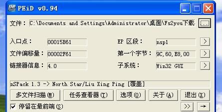

WkerOverLay-UnShell 2020-01-16
当我们在查壳的时候碰到覆盖（OverLay）的时候，我们就需要如下操作：

OverLay数据处理
今天刚学习了这种数据处理的方法，具体原因之后深入分析，其实也就是区段数据的一个补充，首先需要找到我们的多余数据，分为两种简单方法：
数据查找法
这种方法比较简单也比较直接，我们从最底部自下往上寻找一大片00，用快捷键就可以了，记住是搜索没有脱壳的数据：

我们从00后面的数据复制，最好用shift范围性复制，复制到结尾。
区段查找法
这个通过LoadPE查找最后的一个区段的范围，然后通过真实的RVA+Size计算出来我们要找的数据：
8800+400=8C00，我们这里Ctrl+G进行转到，然后看到和我们刚才一样的地方，同样复制。
修复数据
复制完毕之后我们打开我们脱壳完毕的程序，然后拖到底部，然后将我们刚才的数据复制上去。
粘贴上去会询问我们，我们点击确定就好了：
之后我们就会看到数据变成这个样子的：
我们Ctrl+S保存，然后用PEid进行查壳：
我们发现我们的程序脱壳完毕，并且后面还有一个“[覆盖]”，运行也正常这个样子就算是可以了的。